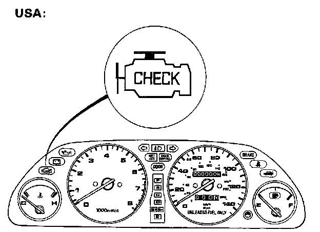
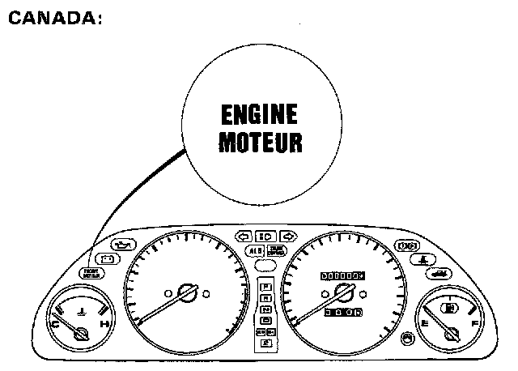
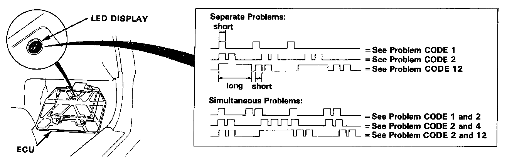

Without Scan Tool



When the Check Engine light has been reported on, turn the ignition on, pull down the passenger's side carpet from under the dashboard and observe the LED on the top of the ECU. The LED indicates a system failure code by blinking frequency. The ECU LED can indicate any number of simultaneous component problems by blinking separate codes, one after another. Problem codes 1 through 9 are indicated by individual short blinks. Problem codes 10 through 43 are indicated by a series of long and short blinks. One long blink equals 10 short blinks. Add the long and short blinks together to determine the problem code.